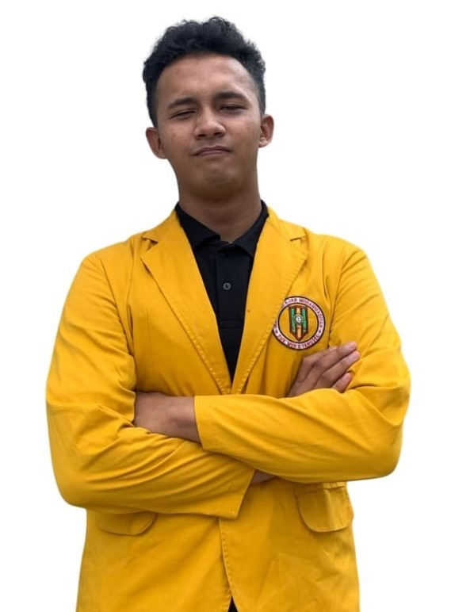

Susunan Pengurus
Bidang Umum

Selfia Adinda Salsabila
Sekretaris Umum

Zaidaan Al Farouq
Ketua Umum

Nur Juniawati
Bendahara Umum
Bidang Perkaderan
Hafizhhoh Nur Afifah
Ketua Bidang

Adelia Rizki Ananda
Sekretaris Bidang

Ibnu Zaki Hisyam
Anindya Aura Loubna

Ratna Dewati Rasrendia
Bidang Kajin Dakwah Islam

Irfan Fajar
Ketua Bidang

Aida Nutmain Nasution
Sekretaris Bidang

Puti Sabrina

Rendy Adriansyah
Bidang Pengkajian Ilmu Pengetahuan

Fahrezi Saputra Darmawan
Ketua Bidang

Wardatul Munawaroh
Sekretaris Bidang

Krishna Haryatama Jaya Ningrat
Yuniar Syalsabilah

Syairani Aprillia Mesa
Bidang Apresiasi Seni Budaya dan Olahraga
Elang Razan Al Ghifari
Ketua Bidang

Haudi Kautsar Aulia Rahman
Sekretaris Bidang

Aulia Fatma Sari
Nizham Muhammad Akbar
Bidang Advokasi
Sayidah Humaira
Ketua Bidang

Inna Fahima
Sekretaris Bidang

Keisha Alviani

Atina Raisha Sofyan
Bidang Pekembangan Kreativitas dan Kewirausahawan

Abdulmalikul Mulki
Ketua Bidang
Fira Damayanti
Sekretaris Bidang

Nur Azizah Adelia Putri

Alfira Putri Rahmadia
Bidang Ipwawati

Aisyah Ayu Saphira Febriana
Ketua Bidang

Cantika Bunga Maharani
Sekretaris Bidang